Made as part of my Mechanics Prototyping module in my first year at University of Staffordshire, Corrupted Crystal Caverns is a top-down shooter and mining game. My work on this project was primarily design work, including using Unreal Engine Blueprint systems to create the game mechanics.
The main game loop consists of mining ores around the level using a mining laser, these ores can then be used inside of the shop system to upgrade the player character’s tank.
These upgrades included: More powerful laser, Bombs and Flares.
Ore can also be used to heal the tank if it has taken any damage.
Key Design Decisions:
- To create a good sense of progression, ores are easily obtained from both mining and killing enemies.
- The cost of the laser upgrades goes up by 10 each time the laser is upgraded, as this scales well with the amount of enemies in the later parts of the level and gives room for the player to afford flares and bombs along the way.
- Flares are cheap to buy, but quick to run out to force the player to use them at the correct time or risk low visibility.
Design Diagrams
Enemy Miner
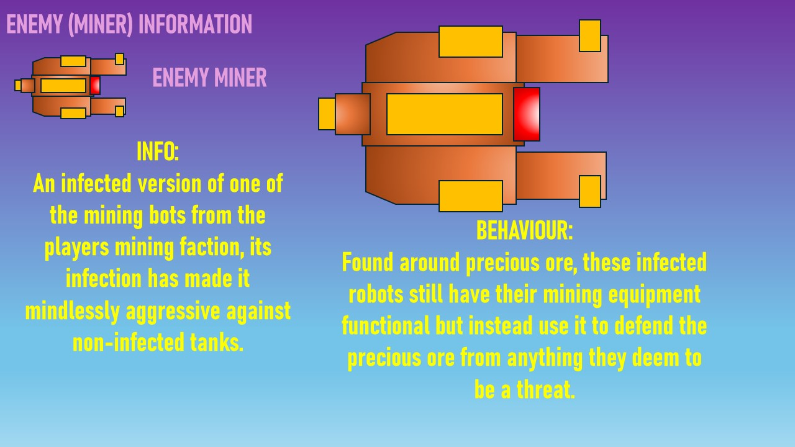
The enemies have the same model as the player as they are from the same mining company, however they have been modified with infectious ore sticking out of their chasis after being stuck in the mines with the infection.
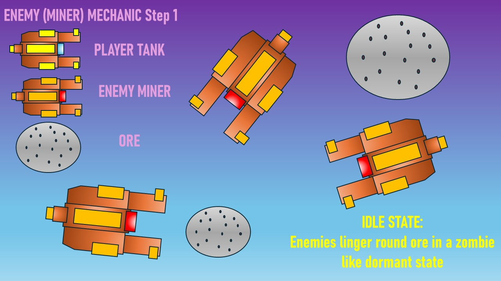
Enemies linger in a zombie-like mindless state, their goal is to protect the ore over anything else.
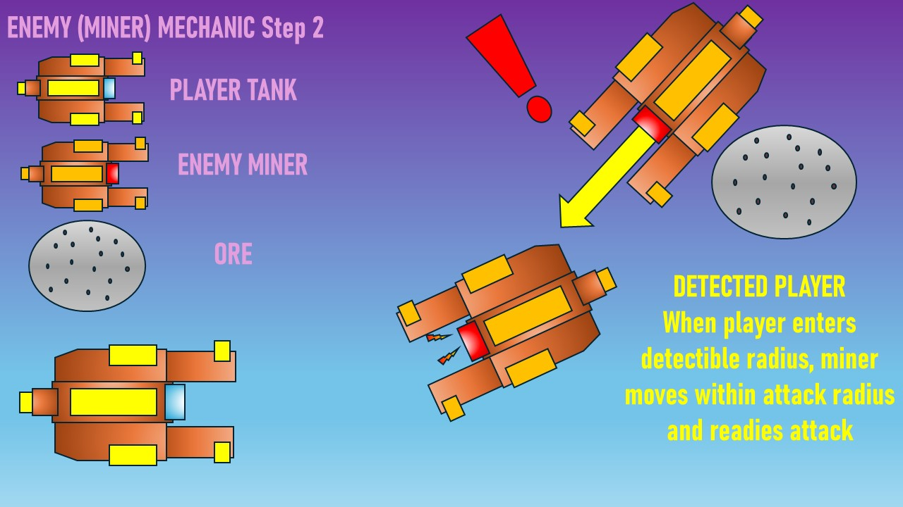
Once the enemies detect the player, they enter an attack state, keeping close to the player but moving manically around, attempting to destroy the player and eliminate the threat to the ore.
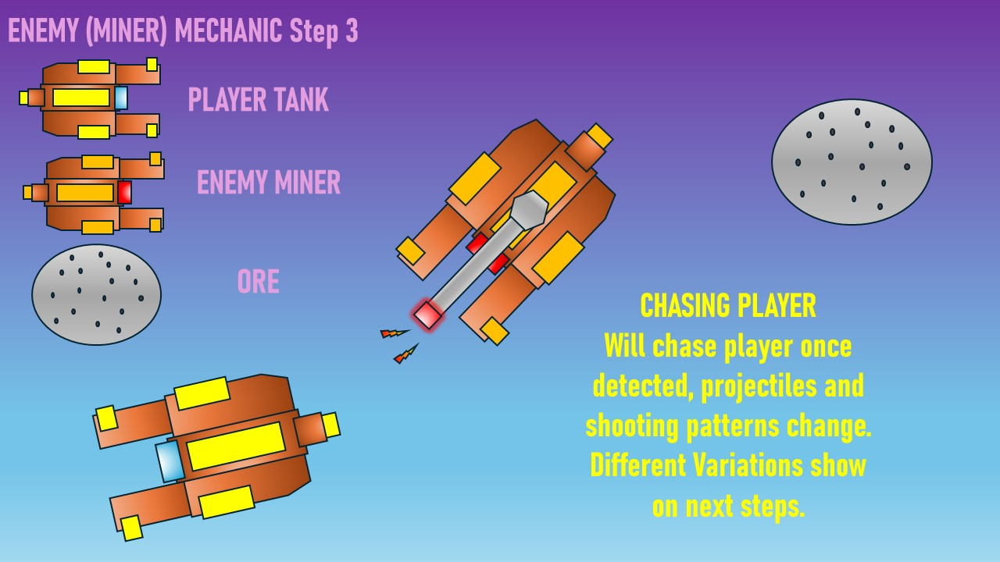
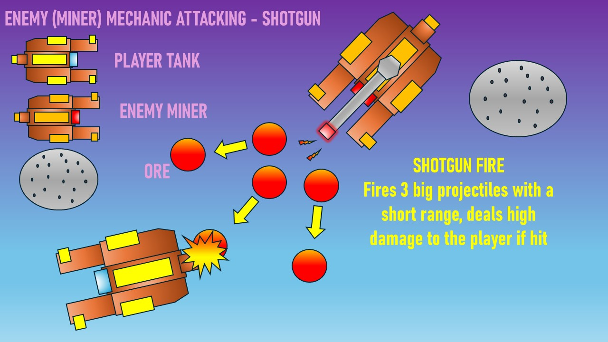
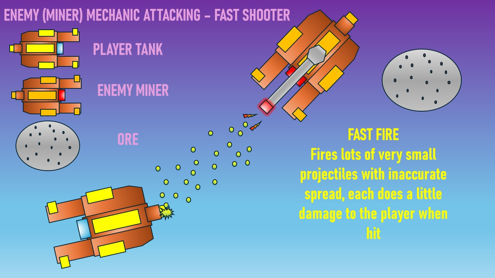
Enemy Bomber
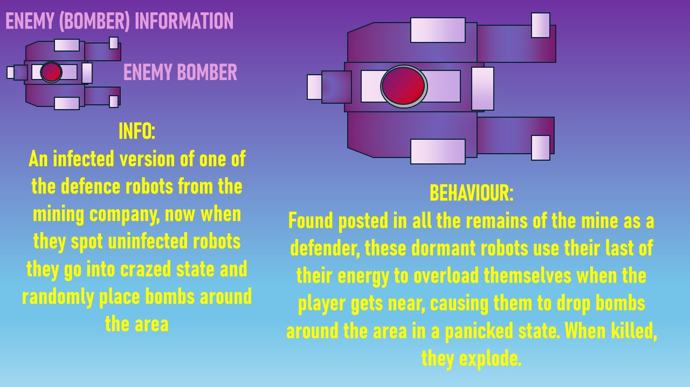
Bombers are the infected defensive systems set up by the mining company, when they spot uninfected mining bots, they enter a panicked defensive state and drop bombs randomly.
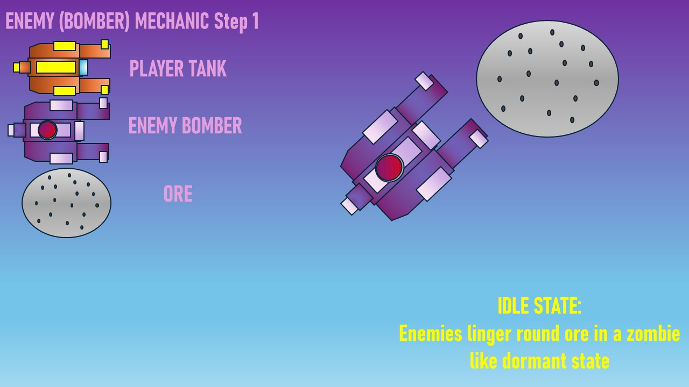
When not detecting any uninfected bots, they remain dormant in power saving mode.
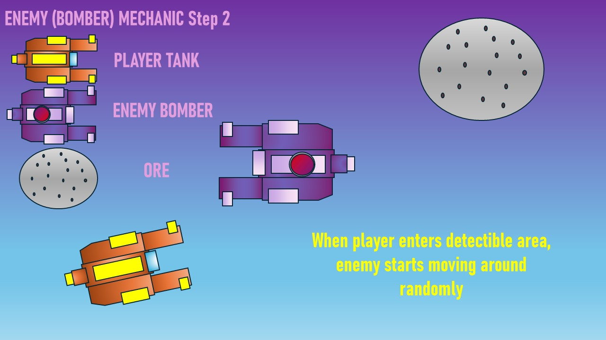
Upon detecting an uninfected bot, it moves around randomly and drops bombs in an attempt to stop the player. If the bombs are collided with or shot, they explode dealing significant damage to and surrounding entities.
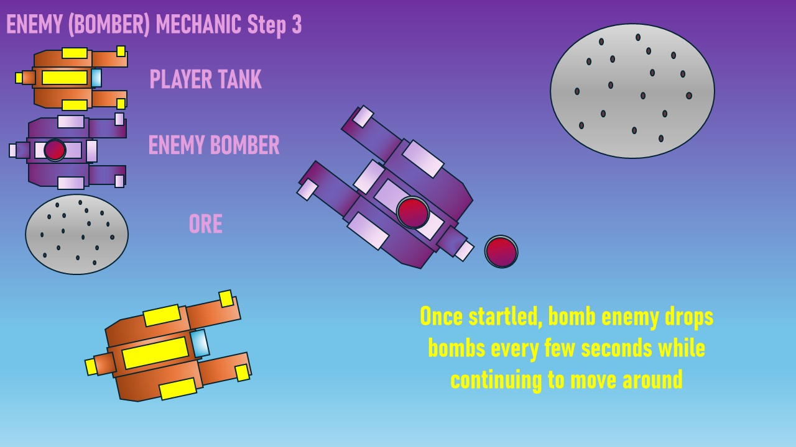
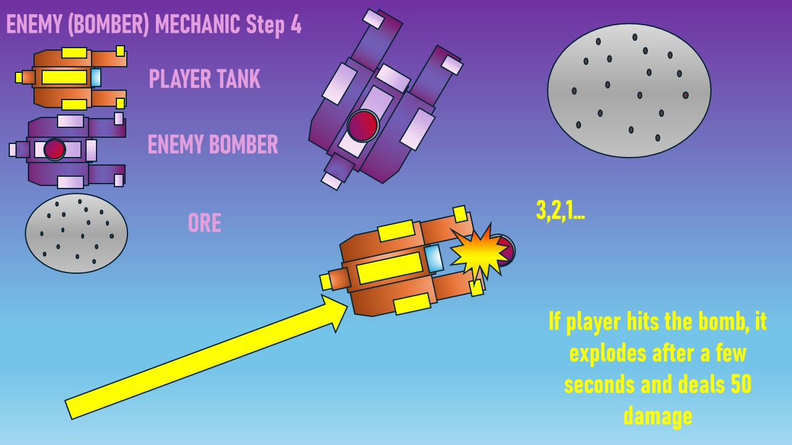
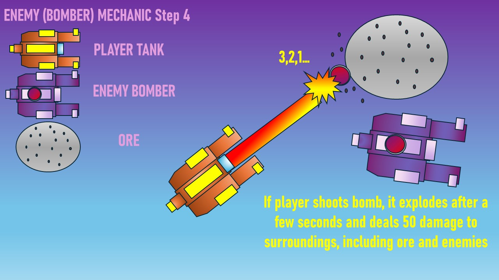
Player Mining
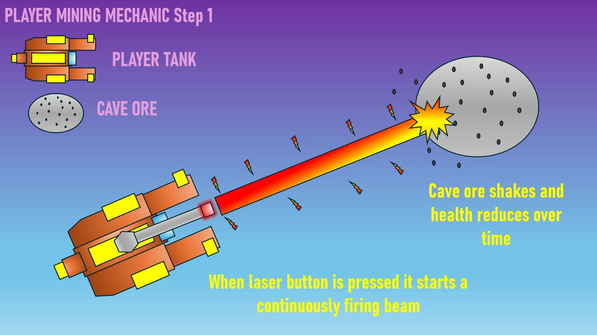
When the player holds the left mouse button, a laser instantly begins firing out of the tank, this was originally tested with a wind up for a few seconds, but it made the tank controls feel sluggish and clunky especially during combat sections so it was changed to have no wind up.
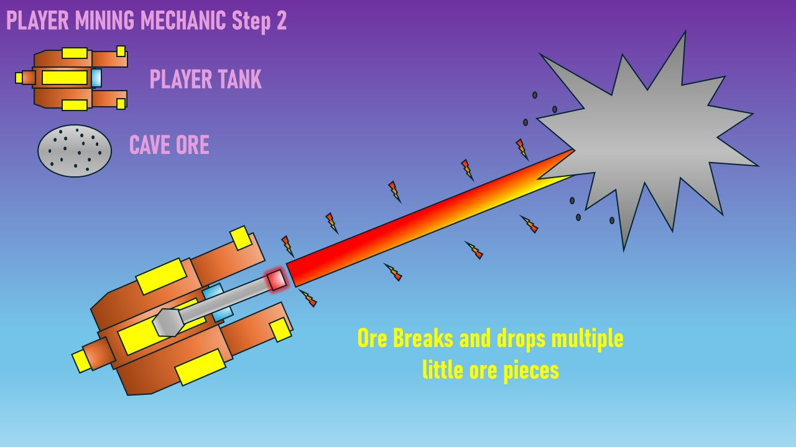
When destroyed, the ore into multiple chunks which creates a satisfying effect of it breaking into chunks.
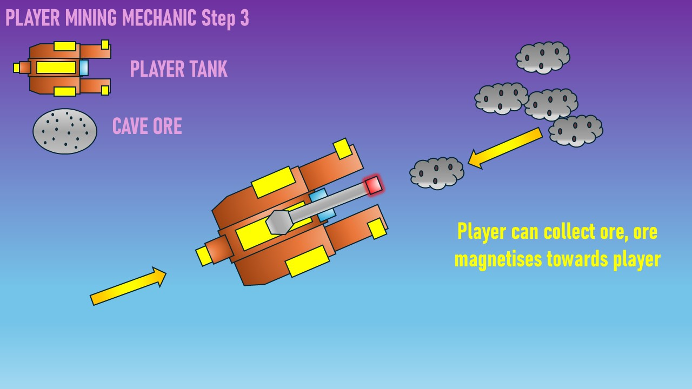
The small ore pieces fly towards the player automatically, this prevents the player having to waste time picking everything up off of the floor. It also creates a much more satisfying mining experience.